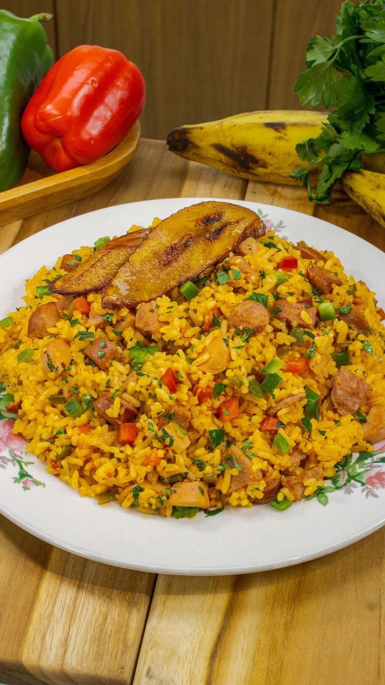

Arroz de Pollo

Arroz de Pollo Colombiano
El arroz con pollo colombiano es un plato tradicional y muy popular
en las reuniones familiares y fiestas del país, caracterizado por mezclar
arroz graneado, pollo desmechado y un sofrito lleno de color y sabor
4 a 6
porciones
1 hora
Igredientes
- Tasa de Arroz Blanco
- 2 Pechuga de Pollo Desmenusadas
(previa mense cocidas en caldo) - Una Zanahoria Grande Rallada
- 1/2 Taza de arverjas
(Frescas o Congeladas) - 1/2 Taza de Maiz Tierno
- Pimiento Rojo Picado en Cubos
Pequeños - Cebolla Larga Finamente Picada
- 2 Dientes de Ajo Triturados
- 3 Cucharadas de Pasta de Tomate
o Salsa de Tomate - 1/4 Taza de Aceite Vegetal o Mantequilla
- 1/2 Cucharada de Comino Molido
- 1/2 Cucharada de Curcuma o Colorante
Natural - 4 Tazas de Caldo de Pollo
- Sal y Pimienta Algusto
- Cilantro Fresco
Preparacion
-
Sofreir Base Aromatica
En una olla grande o sarten profundo, calienta el aceite o
la mantequilla. Sofreir la cebolla, el ajo y el pimiento rojo
Hasta que esten dorados y fragantes Añade el comino y la
curcuma para darle ese toque especial al arroz -
Incorporar Verduras y el Pollo
Agrega la zanahoria rallada, las arverja y el maiz tierno
cocina por 3 minutos mas. Incorpora el Pollo Desmenusado
y la pasta de tomate mezcalda bien para que todos los
ingredientes se impregnen del sabor. -
Añadir Arroz y el Caldo
Añadir el arroz y mezclar con los ingredientes sofritos por
1 minuto luego vierte el caldo de pollo caliente y ajusta
con sal y pimineta. Cocina a fuego alto hasta que hieva. -
Cocina a Fuego lento
Cuando el caldo se haya reducido un poco, Baja el fuego
Tapa la ollo y cocina a fuego bajo por 15-20 minutos, hasta
que el arroz este cocido y ceco, evita destapar durante la
Concion para obtener un arroz espojoso. -
Decorar y servir
Destapa la olla y mueve el arroz con cuidado para
integra todos los ingredientes. Sirve Caliente, decora
decora con cilantro fresco, acompa;a con tajadas de platono
maduro o aguacate para dar un toque autentico.
Para un sabor unico. usa el caldo donde cociste el pollo;
esto intensifica los sabores